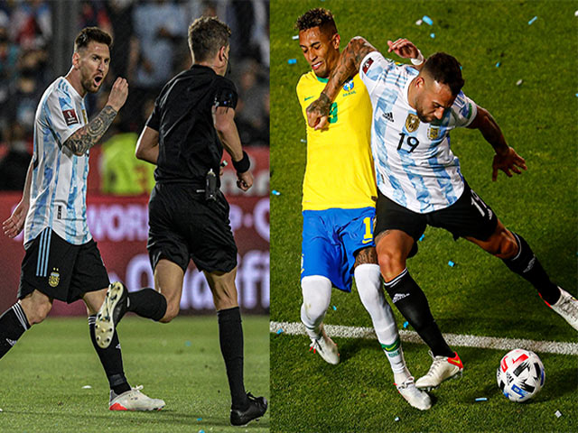

VIDEO diễn biến trận Argentina - Brazil
Siêu sao Lionel Messi và các đồng đội tại ĐT Argentina đã thừa nhận họ không hề biết rằng liệu đội bóng của
mình đã đủ điều kiện tham dự World cup hay chưa. Sau khi cầm hoà đội đầu bảng Brazil trong một trận cầu
không có bàn thắng nào được ghi, nhiều ngôi sao của Argentina đã đứng lại sân để dò la thông tin về tấm vé đi tiếp
Sau khi giành 1 điểm trên sân nhà, Argentina đã có được 29 điểm sau 13 trận đấu và đang xếp thứ 2 sau đội
bóng đã chắc chắn giành vé vào VCK World cup 2022 là Brazil. Trận đấu khép lại trong sự hồi hộp của Messi
cùng các đồng đội bởi không ai biết Argentina đã giành vé dự World Cup tại Qatar hay chưa.
"Tôi ăn mừng vừa đủ, chủ yếu là vì không khí trên sân. Đây là một trận đấu rất căng thẳng và tôi cảm thấy đây là
kết quả khá ổn. Tôi đã đứng rất lâu trên sân sau khi hiệp 2 khép lại và không biết số phận của chúng tôi như thế
nào", Messi thừa nhận.
"Điều quan trọng là chúng tôi đã không thua và tiếp tục có điểm. Hy vọng chúng tôi có thể vượt qua vòng loại và
tôi cần thông tin từ nhiều phía để xác nhận việc này", chân sút của PSG nói thêm.

Ngay cả HLV trưởng Lionel Scaloni cũng đã phải hỏi một nhân viên thuộc Ban tổ chức rằng liệu đội bóng của
ông đã chính thức giành vé chưa. "Tôi không nắm được điều gì. Tôi chỉ được biết sau một khoảng thời gian khá
lâu. Tôi thực sự tự hào về đội bóng này", HLV Scaloni chia sẻ.
Sau khi trận "Siêu kinh điển" Nam Mỹ giữa Argentina và Brazil khép lại, Messi cùng đồng đội đã phải hỏi rất
nhiều người ngoài sân và biết được rằng họ cần chờ kết quả trận đấu diễn ra sau đó giữa Chile và Ecuado.
nhiều người ngoài sân và biết được rằng họ cần chờ kết quả trận đấu diễn ra sau đó giữa Chile và Ecuado.
thức bị đẩy xuống vị trí thứ 6, kém Argentina tới 13 điểm trong khi chỉ còn 4 vòng đấu nữa. Như vậy, Argentina
đã nối bước Brazil để trở thành đại diện tiếp theo của Nam Mỹ chính thức giành vé dự
VCK World Cup tại Qatar
vào năm sau
Nguồn: https://tcdulichtphcm.vn/the-thao/hai-huoc-messi-khong-biet-argentina-co-ve-du-world-cup-sau-tra..

"Siêu kinh điển" Brazil - Argentina hóa võ đài: 42 lần phạm lỗi, đồng đội Messi thoát thẻ đỏ
Trận "Siêu kinh điển Nam Mỹ" giữa Argentina và Brazil đã hóa thành võ đài khi cầu thủ hai bên liên tục lao...